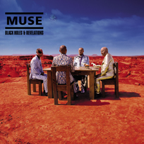

|
Showbiz
Origin Of Simmetry
Hullabaloo
Absolution
Black Holes and Revelations
HAARP
The Resistance
2nd Law
|
MUSE - BLACK HOLES AND REVELATIONS
|

|
- Ano de Lançamento: 2006
- Gravadora: Warner Bros., Helium-3
- Genero: Rock Alternativo,New Prog, Space Rock e Rock Progressivo
- Produtor: Rich Costey, Muse
|
|